ZoroCharts
21 chart types, drawings, Pine Script, layouts and paper trading. Build a grid from one chart to sixteen.
Pick one. The heatmap is a recorded order book you can filter yourself.
Resting orders at every price, drawn behind the candles. Big levels get a size label. Move the slider to hide the small ones.
Every candle split by price, with the volume sold at the bid and bought at the ask. The busiest price is boxed. Switch to ladder style when you zoom out.
Call wall, put wall and zero gamma from options positioning, drawn on the chart and listed by expiry. SPX, SPY, QQQ, ES, NQ and gold.
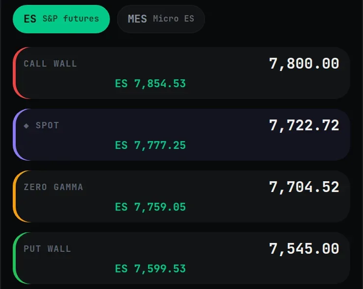
Step through a past session one bar at a time. Order flow tools keep working in replay, so you can practise reading it before it matters.
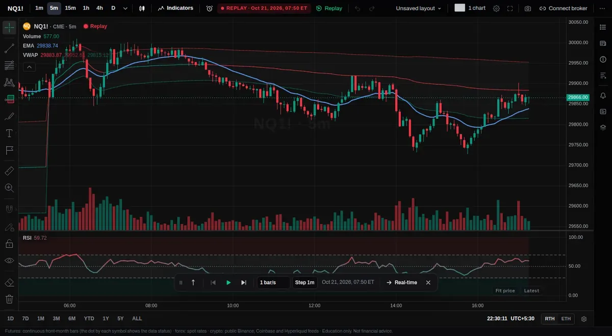
Order flow adds who traded, what is resting in the book and where options positioning sits. Futures order flow is built on our server from every trade and the side that started it.
Every trade plus the best bid and ask: footprint, delta, CVD, big trades, absorption, imbalance zones, stop runs, effort vs result.
The order book: heatmap, DOM ladder, liquidity walls, book imbalance and a Book, DOM and Trades panel.
Each one opens in the same window, on the same data.
21 chart types, drawings, Pine Script, layouts and paper trading. Build a grid from one chart to sixteen.
39 tools in the Order Flow group, 7 of them L2: Delta ladder, Delta, CVD, footprint, big trades, stop runs and volume profile.
Call wall, put wall, zero gamma and IV range for SPX, SPY, QQQ, ES, NQ and gold.
Resting orders as a heatmap with trade bubbles, in four colour looks.
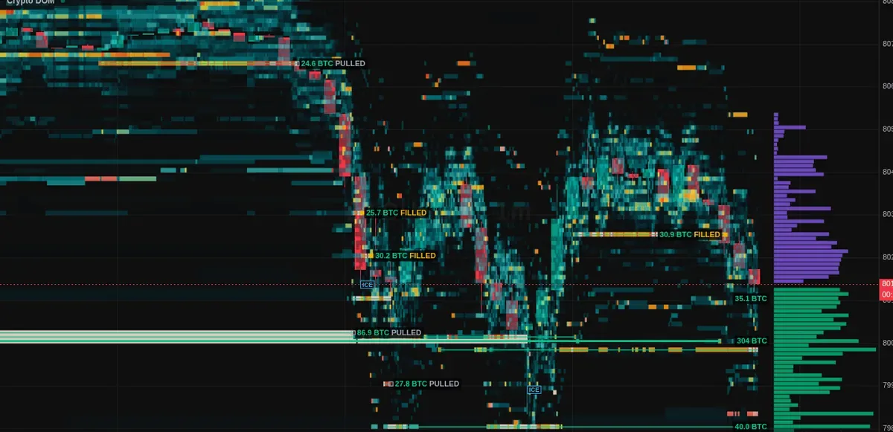
Any past session, bar by bar, with paper orders.
Log setup, session and notes. Import from your broker and review by tag.
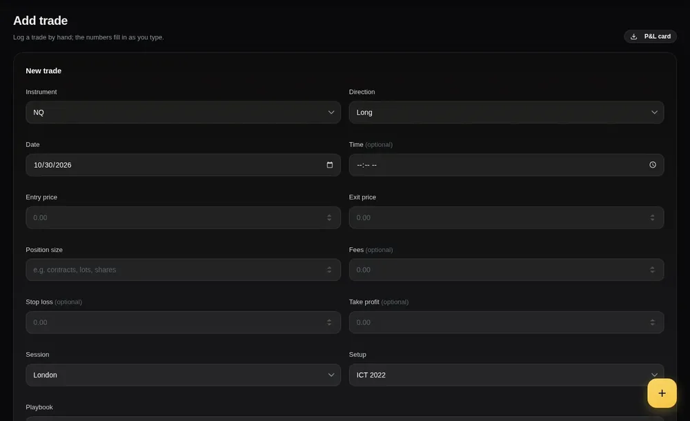
How often gaps, opening ranges and levels played out, with the sample size beside every number.
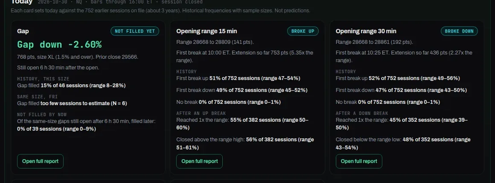
US stocks, ETFs and crypto: gainers, losers, unusual volume, new highs and lows, or your own filters.
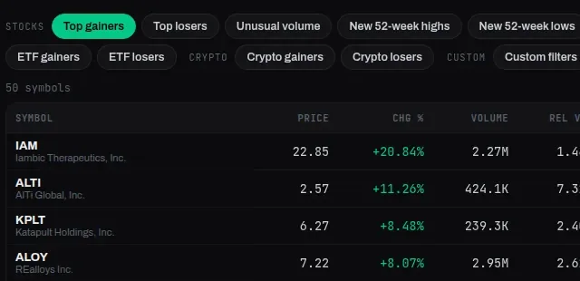
Up to 1000 price alerts. Price alerts on futures and crypto reach your phone with Charts closed.
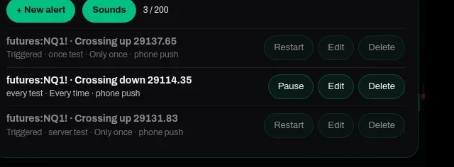
Net call premium against net put premium since the open, for SPX, SPY, QQQ, ES and NQ.
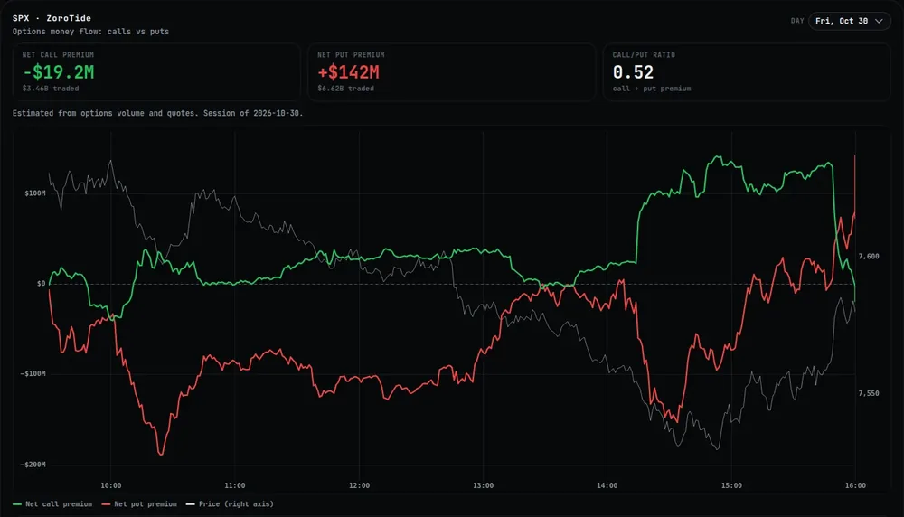
Connect a feed and the same charts and order flow tools run on it. TradeZoro is data only: it never places real orders, so you keep trading at your broker.
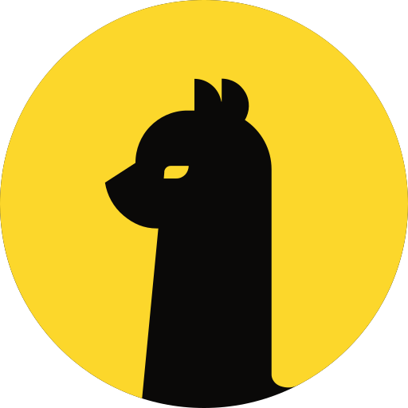
Alpaca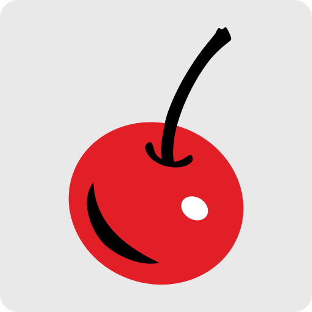
tastytrade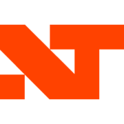
NinjaTrader 8NinjaTrader 8, MetaTrader 5 and Interactive Brokers connect through the desktop helper. Rithmic is your own prop firm login.
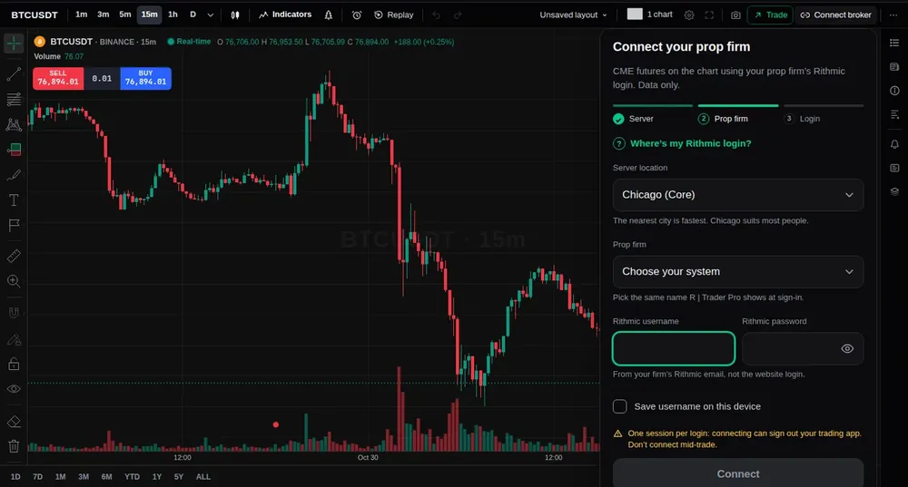
Everything else on TradeZoro stays free.
Everything in Free, plus:
Yes. Every chart type, interval, indicator, drawing, layout, alert, paper trade and bar replay is on every plan. Pro adds the order flow tools and GEX on the charts.
Crypto comes from public Binance, Coinbase and Hyperliquid feeds. CME futures run 10 minutes behind by CME rule unless you connect your own Rithmic login or add the futures data add-on. Futures order flow is built on our server from every trade.
NQ, ES, YM, GC, SI and CL with their micro contracts, and Binance crypto pairs. The liquidity heatmap is crypto only.
Only with demo money. Paper trading fills simulated orders against the chart. TradeZoro never places real orders.
Yes. The chart is built for touch: pinch to zoom, drag to pan, and menus open as sheets. Your layouts follow you between phone and desktop.